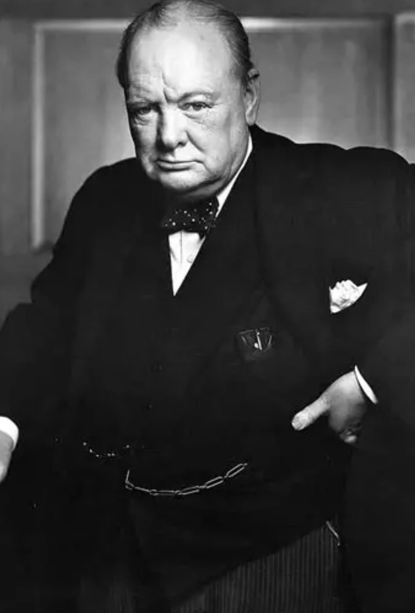
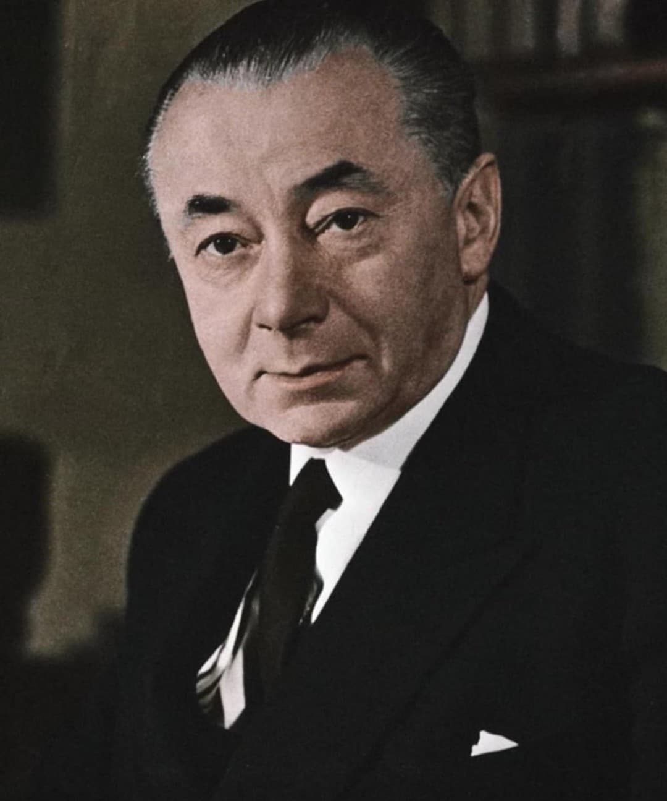

Introduction
Juin 1940 est un moment de bascule pour la France. Alors que l’armée française recule, que les colonnes de réfugiés encombrent les routes et que le gouvernement cherche une issue à la crise, une poignée d’hommes refuse l’idée même de la défaite. Au milieu de ce chaos, Charles de Gaulle choisit une voie radicale : continuer la lutte depuis l’étranger, en rompant avec la logique d’armistice. Cette fiche présente le contexte, les acteurs et la chronologie précise des journées qui mènent à la naissance de la France Libre.
Contexte général
En juin 1940, la France s’effondre sous l’offensive allemande. Les lignes de défense sont enfoncées, les villes tombent les unes après les autres, et le gouvernement se replie vers le sud. L’armistice apparaît comme une solution « raisonnable » pour une grande partie de la classe politique, soucieuse de mettre fin aux combats. Dans ce climat de découragement, Charles de Gaulle, nommé sous-secrétaire d’État à la Guerre, refuse la fatalité. Il estime que la guerre est mondiale, que la France peut continuer le combat aux côtés du Royaume-Uni, et que la défaite militaire ne doit pas signifier la disparition de la nation. C’est cette conviction qui le pousse à envisager un départ vers Londres pour organiser une résistance extérieure.
Les hommes qui ont permis l’émergence de la France Libre

Charles de Gaulle
Officier de carrière, théoricien de la guerre mécanisée, De Gaulle devient en juin 1940 l’un des rares responsables à refuser l’armistice. Après avoir combattu sur le front, il rejoint le gouvernement et tente de convaincre ses collègues que la lutte peut continuer depuis l’Empire et aux côtés des Britanniques. Son départ pour Londres, puis l’Appel du 18 juin, marquent la naissance de la France Libre et offrent aux Français une autre voie que la soumission au régime de Vichy.

Winston Churchill
Premier ministre britannique depuis mai 1940, Churchill incarne la volonté de résister coûte que coûte à l’Allemagne nazie. Lorsqu’il rencontre De Gaulle, il comprend qu’il tient là un interlocuteur capable de représenter une France qui ne se résigne pas. Il lui offre un espace politique, un accès à la BBC et une reconnaissance symbolique comme chef des Français libres. Sans ce soutien, l’Appel du 18 juin n’aurait pas eu la même portée ni la même légitimité.

Georges Mandel
Ministre de l’Intérieur, Georges Mandel est l’un des plus fermes opposants à l’armistice. Il considère que la France doit continuer la guerre, même dans des conditions difficiles, plutôt que de se placer sous la tutelle de l’ennemi. Mandel encourage De Gaulle à quitter la France avant la capitulation, en lui lançant une phrase restée célèbre : « La France aura besoin de vous ». Par ce geste, il donne à De Gaulle une légitimité morale pour incarner la résistance extérieure, au moment où la plupart des responsables politiques renoncent.

Edward Spears
Edward Spears est officier de liaison britannique auprès du gouvernement français. Il joue un rôle décisif dans l’organisation matérielle du départ de De Gaulle vers Londres. Dans la nuit du 16 au 17 juin, c’est lui qui prévient Churchill, trouve un avion, accompagne De Gaulle et s’assure qu’il puisse rejoindre l’Angleterre avant l’annonce officielle de la demande d’armistice. Sans cette aide logistique et politique, l’exfiltration de De Gaulle aurait été beaucoup plus difficile, voire impossible.

Paul Reynaud
Président du Conseil jusqu’au 16 juin 1940, Paul Reynaud est le dernier chef du gouvernement à tenter de poursuivre la guerre. Il soutient les projets de De Gaulle, envisage une union politique avec le Royaume-Uni pour éviter la capitulation et résiste aux pressions de ceux qui veulent l’armistice. Sa démission, remplacée par le gouvernement Pétain, ouvre la voie à la demande d’armistice et à la mise en place du régime de Vichy. Son rôle est central pour comprendre la bascule entre une France qui hésite encore à se battre et une France qui choisit la collaboration.
Chronologie – 15 au 20 juin 1940
15 juin : De Gaulle inspecte la Bretagne, constate la désorganisation des troupes et la gravité de la situation. Il participe à l’organisation de l’évacuation de certaines unités vers l’Angleterre, notamment via le contre-torpilleur Milan. Cette journée lui confirme que la bataille de France est pratiquement perdue, mais que la guerre peut continuer ailleurs.
16 juin : À Londres, De Gaulle découvre le projet d’union franco-britannique, qui aurait permis de fusionner les deux États pour poursuivre la lutte commune. En France, Paul Reynaud démissionne, et le maréchal Pétain devient chef du gouvernement. Ce changement politique marque un tournant : la nouvelle équipe est favorable à l’armistice.
Nuit du 16 au 17 : Edward Spears organise le retour de De Gaulle à Londres. Il prévient Churchill, trouve un avion et accompagne De Gaulle dans un contexte de grande confusion politique. Ce départ nocturne permet à De Gaulle d’être à Londres au moment où la France bascule vers l’armistice, ce qui lui donne une position unique pour parler au nom des Français qui refusent la défaite.
17 juin : De Gaulle arrive à Londres. Churchill lui accorde un soutien politique et lui donne accès à la BBC pour s’adresser aux Français. Le même jour, Pétain annonce à la radio qu’il faut « cesser le combat », préparant la demande officielle d’armistice. Deux voix françaises se font alors entendre : celle de la résignation et celle de la résistance.
18 juin : De Gaulle rédige et prononce son célèbre Appel du 18 juin depuis Londres. Il y affirme que la guerre n’est pas terminée, que la France peut compter sur son Empire et sur les alliés, et invite les militaires, les ingénieurs et les ouvriers à rejoindre la lutte. Cet appel, peu entendu sur le moment, devient par la suite le texte fondateur de la France Libre et un symbole majeur de la Résistance.
Vidéo – Appel du 18 juin 1940
Interdit aux enfants.
Présenté uniquement à des fins historiques.
19–20 juin : Dans les jours qui suivent, De Gaulle commence à organiser les premiers réseaux de la France Libre : contacts avec les colonies, structuration d’un embryon d’état-major, prise de position publique contre l’armistice. La France Libre n’est encore qu’une minorité, mais elle offre une alternative politique et morale à la collaboration et à la soumission.